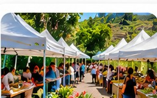

Vie locale
Bienvenue sur le nouveau portail citoyen
Découvrez les services de proximité et les démarches accessibles depuis chez vous.
Une commune nature, solidaire et participative
Découvrir les services →
Découvrez les services de proximité et les démarches accessibles depuis chez vous.
Consultez bientôt le calendrier municipal.
Retrouvez les rendez-vous locaux.
Découvrez les projets de la commune et leur avancement.
Proposez une idée, participez à une consultation ou signalez un problème dans votre quartier.
Un accueil de proximité, des informations claires et des démarches simplifiées. Cette version est un prototype de présentation.
Prototype : les informations saisies ne sont ni transmises ni enregistrées.